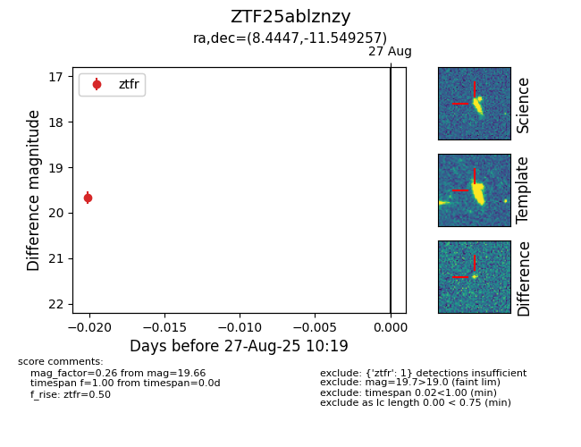

Target ZTF25ablznzy at 2025-08-27 10:19, see:
FINK: fink-portal.org/ZTF25ablznzy
Lasair: lasair-ztf.lsst.ac.uk/objects/ZTF25ablznzy
ALeRCE: alerce.online/object/ZTF25ablznzy
alt names
ZTF25ablznzy (ztf,fink)
coordinates:
equatorial (ra, dec) = (8.4447,-11.54926)
galactic (l, b) = (107.1724,-73.87827)
photometry
last ztfr=19.66
1 ztfr detections
